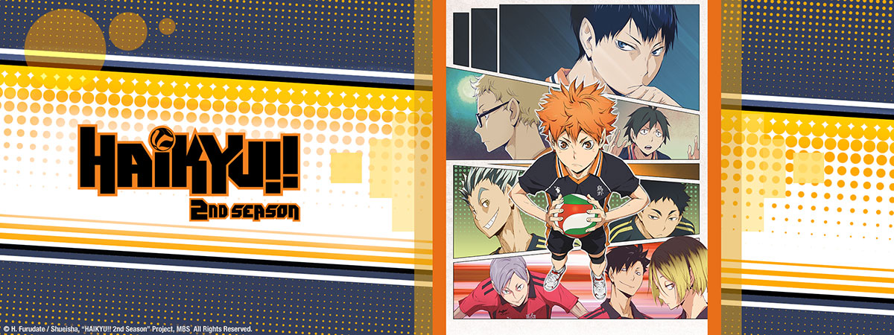

2°SEASON

QUALIFICAZIONI DI PREFETTURA
La squadra del liceo Karasuno si impegna per sconfiggere gli avversari che si frappongono tra loro ed il torneo nazionale di pallavolo delle superiori.
Grazie al liceo Nekoma, con cui avevano stretto un forte rapporto di amicizia, arriva un'offerta:
partecipare ad un ritiro con loro ed altre forti squadre di Tokyo,come la Fukurodani, che aiuteranno la Karasuno a migliorare.
Durante il ritiro, i ragazzi sviluppano sia tecnica che fiducia in campo esi fa strada la consapevolezza che la Karasuno ha i mezzi per fare molta strada.
Tutto questo accade in mezzo ad una serie quasi infinita di sconfitte, che però fanno capire ai ragazzi come diventare un vero team.
In seguito, la squadra dovrà affrontare le diffcili qualificazioni di prefettura e qui altri dubbi e timori saranno superati dal concetto di giocare per la squadra,
“per noi che non vogliamo arrenderci”.
Dopo una lunga serie di grandi partite, la Karasuno riesce, a vincere fino a raggiungere la finale,
dove ad attenderla vi è la Shiratorizawa, squadra di Ushijima.
1°STAGIONE← →3°STAGIONE